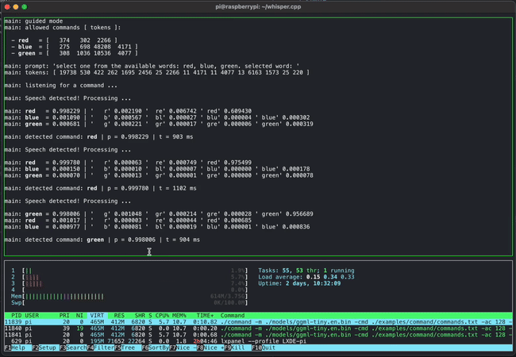
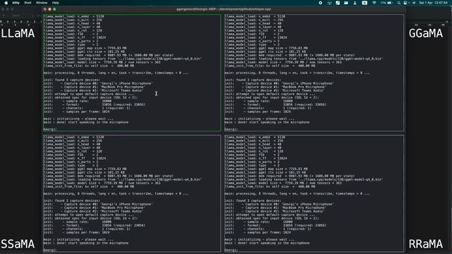

GGML - AI at the edge
ggml is a tensor library for machine learning to enable large models and high performance on commodity hardware. It is used by llama.cpp and whisper.cpp
- Written in C
- 16-bit float support
- Integer quantization support (e.g. 4-bit, 5-bit, 8-bit)
- Automatic differentiation
- Built-in optimization algorithms (e.g. ADAM, L-BFGS)
- Optimized for Apple Silicon
- On x86 architectures utilizes AVX / AVX2 intrinsics
- No third-party dependencies
- Zero memory allocations during runtime
- Guided language output support
Examples
Short voice command detection on a Raspberry Pi 4 using whisper.cpp
Simultaneously running 4 instances of 13B LLaMA + Whisper Small on a single M1 Pro
Here are some sample performance stats on M1 Pro as of May 2023:
- Whisper Small Encoder, 7 CPU threads: 600 ms / run
- Whisper Small Encoder, ANE via Core ML: 200 ms / run
- 7B LLaMA, 4-bit quantization, 3.5 GB, 8 CPU threads: 43 ms / token
- 13B LLaMA, 4-bit quantization, 6.8 GB, 8 CPU threads: 73 ms / token
The ggml way
-
Minimal
We like simplicity and aim to keep the codebase as small and as simple as possible
-
Open Core
The library and related projects are freely available under the MIT license. The development process is open and everyone is welcome to join. In the future we may choose to develop extensions that are licensed for commercial use
-
Explore and have fun!
We built ggml in the spirit of play. Contributors are encouraged to try crazy ideas, build wild demos, and push the edge of what’s possible
Projects
-
whisper.cpp
High-performance inference of OpenAI's Whisper automatic speech recognition model
The project provides a high-quality speech-to-text solution that runs on Mac, Windows, Linux, iOS, Android, Raspberry Pi, and Web
-
llama.cpp
Inference of Meta's LLaMA large language model
The project demonstrates efficient inference on Apple Silicon hardware and explores a variety of optimization techniques and applications of LLMs
Contributing
-
The best way to support the project is by contributing to the codebase
-
If you wish to financially support the project, please consider becoming a sponsor to any of the contributors that are already involved:
-
You can join our Discord
Company
ggml.ai is a company founded by Georgi Gerganov to support the development of ggml. Nat Friedman and Daniel Gross provided the pre-seed funding.
We are currently seeking to hire full-time developers that share our vision and would like to help advance the idea of on-device inference. If you are interested and if you have already been a contributor to any of the related projects, please contact us at jobs@ggml.ai
Business inquiries
For any business-related topics, including support or enterprise deployment, please contact us at sales@ggml.ai